原文：Matplotlib tutorial
译文：Matplotlib 教程
介绍 Matplotlib 可能是 Python 2D-绘图领域使用最广泛的套件。它能让使用者很轻松地将数据图形化，并且提供多样化的输出格式。这里将会探索 matplotlib 的常见用法。
IPython 以及 pylab 模式 IPython 是 Python 的一个增强版本。它在下列方面有所增强：命名输入输出、使用系统命令（shell commands）、排错（debug）能力。我们在命令行终端给 IPython 加上参数 -pylab （0.12 以后的版本是 --pylab）之后，就可以像 Matlab 或者 Mathematica 那样以交互的方式绘图。
pylab pylab 是 matplotlib 面向对象绘图库的一个接口。它的语法和 Matlab 十分相近。也就是说，它主要的绘图命令和 Matlab 对应的命令有相似的参数。
初级绘制 这一节中，我们将从简到繁：先尝试用默认配置在同一张图上绘制正弦和余弦函数图像，然后逐步美化它。
第一步，是取得正弦函数和预先函数的值：
1 2 3 4 from pylab import * X = np.linspace(-np.pi, np.pi, 256,endpoint=True) C,S = np.cos(X), np.sin(X)
X 是一个 numpy 数组，包含了从 -π 到 +π 等间隔的 256 个值。C 和 S 则分别是这 256 个值对应的余弦和正弦函数值组成的 numpy 数组。
你可以在 IPython 的交互模式下测试代码，也可以下载代码（下载链接就是这些示例图），然后执行：
使用默认配置 Matplotlib 的默认配置都允许用户自定义。你可以调整大多数的默认配置：图片大小和分辨率（dpi）、线宽、颜色、风格、坐标轴、坐标轴以及网格的属性、文字与字体属性等。不过，matplotlib 的默认配置在大多数情况下已经做得足够好，你可能只在很少的情况下才会想更改这些默认配置。
1 2 3 4 5 6 7 8 9 from pylab import * X = np.linspace(-np.pi, np.pi, 256,endpoint=True) C,S = np.cos(X), np.sin(X) plot(X,C) plot(X,S) show()
默认配置的具体内容 下面的代码中，我们展现了 matplotlib 的默认配置并辅以注释说明，这部分配置包含了有关绘图样式的所有配置。代码中的配置与默认配置完全相同，你可以在交互模式中修改其中的值来观察效果。
1 2 3 4 5 6 7 8 9 10 11 12 13 14 15 16 17 18 19 20 21 22 23 24 25 26 27 28 29 30 31 32 33 34 35 # 导入 matplotlib 的所有内容（nympy 可以用 np 这个名字来使用） from pylab import * # 创建一个 8 * 6 点（point）的图，并设置分辨率为 80 figure(figsize=(8,6), dpi=80) # 创建一个新的 1 * 1 的子图，接下来的图样绘制在其中的第 1 块（也是唯一的一块） subplot(1,1,1) X = np.linspace(-np.pi, np.pi, 256,endpoint=True) C,S = np.cos(X), np.sin(X) # 绘制余弦曲线，使用蓝色的、连续的、宽度为 1 （像素）的线条 plot(X, C, color="blue", linewidth=1.0, linestyle="-") # 绘制正弦曲线，使用绿色的、连续的、宽度为 1 （像素）的线条 plot(X, S, color="green", linewidth=1.0, linestyle="-") # 设置横轴的上下限 xlim(-4.0,4.0) # 设置横轴记号 xticks(np.linspace(-4,4,9,endpoint=True)) # 设置纵轴的上下限 ylim(-1.0,1.0) # 设置纵轴记号 yticks(np.linspace(-1,1,5,endpoint=True)) # 以分辨率 72 来保存图片 # savefig("exercice_2.png",dpi=72) # 在屏幕上显示 show()
改变线条的颜色和粗细 首先，我们以蓝色和红色分别表示余弦和正弦函数，而后将线条变粗一点。接下来，我们在水平方向拉伸一下整个图。
1 2 3 4 5 6 7 8 9 10 11 12 13 14 15 16 17 18 19 20 21 22 23 24 25 26 27 28 29 30 31 32 33 34 35 # 导入 matplotlib 的所有内容（nympy 可以用 np 这个名字来使用） from pylab import * # 创建一个 8 * 6 点（point）的图，并设置分辨率为 80 figure(figsize=(8,6), dpi=80) # 创建一个新的 1 * 1 的子图，接下来的图样绘制在其中的第 1 块（也是唯一的一块） subplot(1,1,1) X = np.linspace(-np.pi, np.pi, 256,endpoint=True) C,S = np.cos(X), np.sin(X) # 绘制余弦曲线，使用蓝色的、连续的、宽度为 1 （像素）的线条 plot(X, C, color="blue", linewidth=1.0, linestyle="-") # 绘制正弦曲线，使用绿色的、连续的、宽度为 1 （像素）的线条 plot(X, S, color="green", linewidth=1.0, linestyle="-") # 设置横轴的上下限 xlim(-4.0,4.0) # 设置横轴记号 xticks(np.linspace(-4,4,9,endpoint=True)) # 设置纵轴的上下限 ylim(-1.0,1.0) # 设置纵轴记号 yticks(np.linspace(-1,1,5,endpoint=True)) # 以分辨率 72 来保存图片 # savefig("exercice_2.png",dpi=72) # 在屏幕上显示 show()
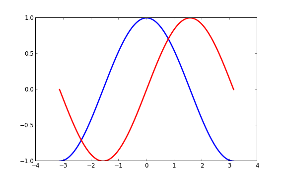
设置图片边界 当前的图片边界设置得不好，所以有些地方看得不是很清楚。
1 2 3 4 ... xlim(X.min()*1.1, X.max()*1.1) ylim(C.min()*1.1, C.max()*1.1) ...
更好的方式是这样：
1 2 3 4 5 6 7 8 xmin ,xmax = X.min(), X.max() ymin, ymax = Y.min(), Y.max() dx = (xmax - xmin) * 0.2 dy = (ymax - ymin) * 0.2 xlim(xmin - dx, xmax + dx) ylim(ymin - dy, ymax + dy)
设置记号 我们讨论正弦和余弦函数的时候，通常希望知道函数在 ±π 和 ±π/2 的值。这样看来，当前的设置就不那么理想了。
1 2 3 4 ... xticks( [-np.pi, -np.pi/2, 0, np.pi/2, np.pi]) yticks([-1, 0, +1]) ...
设置记号的标签 记号现在没问题了，不过标签却不大符合期望。我们可以把 3.142 当做是 π，但毕竟不够精确。当我们设置记号的时候，我们可以同时设置记号的标签。注意这里使用了 LaTeX。
1 2 3 4 5 6 7 ... xticks([-np.pi, -np.pi/2, 0, np.pi/2, np.pi], [r'$-\pi$', r'$-\pi/2$', r'$0$', r'$+\pi/2$', r'$+\pi$']) yticks([-1, 0, +1], [r'$-1$', r'$0$', r'$+1$']) ...
移动脊柱 坐标轴线和上面的记号连在一起就形成了脊柱（Spines，一条线段上有一系列的凸起，是不是很像脊柱骨啊~），它记录了数据区域的范围。它们可以放在任意位置，不过至今为止，我们都把它放在图的四边。
实际上每幅图有四条脊柱（上下左右），为了将脊柱放在图的中间，我们必须将其中的两条（上和右）设置为无色，然后调整剩下的两条到合适的位置——数据空间的 0 点。
1 2 3 4 5 6 7 8 9 ... ax = gca() ax.spines['right'].set_color('none') ax.spines['top'].set_color('none') ax.xaxis.set_ticks_position('bottom') ax.spines['bottom'].set_position(('data',0)) ax.yaxis.set_ticks_position('left') ax.spines['left'].set_position(('data',0)) ...
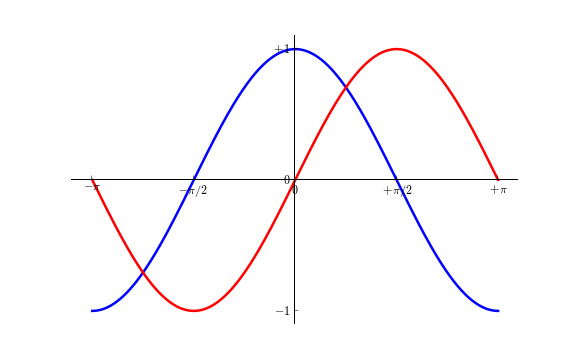
添加图例 我们在图的左上角添加一个图例。为此，我们只需要在 plot 函数里以「键 - 值」的形式增加一个参数。
1 2 3 4 5 6 ... plot(X, C, color="blue", linewidth=2.5, linestyle="-", label="cosine") plot(X, S, color="red", linewidth=2.5, linestyle="-", label="sine") legend(loc='upper left') ...
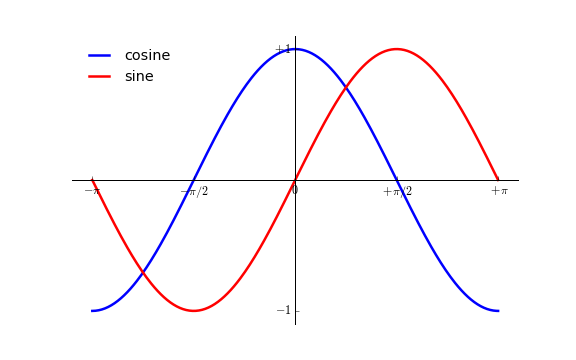
给一些特殊点做注释 我们希望在 2π/3 的位置给两条函数曲线加上一个注释。首先，我们在对应的函数图像位置上画一个点；然后，向横轴引一条垂线，以虚线标记；最后，写上标签。
1 2 3 4 5 6 7 8 9 10 11 12 13 14 15 16 17 18 19 ... t = 2*np.pi/3 plot([t,t],[0,np.cos(t)], color ='blue', linewidth=2.5, linestyle="--") scatter([t,],[np.cos(t),], 50, color ='blue') annotate(r'$\sin(\frac{2\pi}{3})=\frac{\sqrt{3}}{2}$', xy=(t, np.sin(t)), xycoords='data', xytext=(+10, +30), textcoords='offset points', fontsize=16, arrowprops=dict(arrowstyle="->", connectionstyle="arc3,rad=.2")) plot([t,t],[0,np.sin(t)], color ='red', linewidth=2.5, linestyle="--") scatter([t,],[np.sin(t),], 50, color ='red') annotate(r'$\cos(\frac{2\pi}{3})=-\frac{1}{2}$', xy=(t, np.cos(t)), xycoords='data', xytext=(-90, -50), textcoords='offset points', fontsize=16, arrowprops=dict(arrowstyle="->", connectionstyle="arc3,rad=.2")) ...
精益求精 坐标轴上的记号标签被曲线挡住了，作为强迫症患者（雾）这是不能忍的。我们可以把它们放大，然后添加一个白色的半透明底色。这样可以保证标签和曲线同时可见。
1 2 3 4 5 ... for label in ax.get_xticklabels() + ax.get_yticklabels(): label.set_fontsize(16) label.set_bbox(dict(facecolor='white', edgecolor='None', alpha=0.65 )) ...
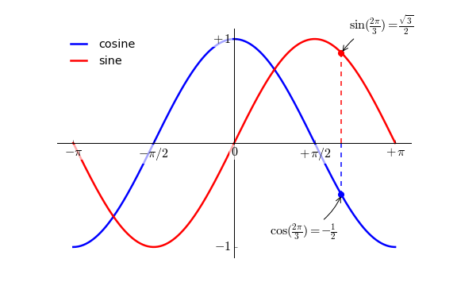
图像、子图、坐标轴和记号 到目前为止，我们都用隐式的方法来绘制图像和坐标轴。快速绘图中，这是很方便的。我们也可以显式地控制图像、子图、坐标轴。Matplotlib 中的「图像」指的是用户界面看到的整个窗口内容。在图像里面有所谓「子图」。子图的位置是由坐标网格确定的，而「坐标轴」却不受此限制，可以放在图像的任意位置。我们已经隐式地使用过图像和子图：当我们调用 plot 函数的时候，matplotlib 调用 gca() 函数以及 gcf() 函数来获取当前的坐标轴和图像；如果无法获取图像，则会调用 figure() 函数来创建一个——严格地说，是用 subplot(1,1,1) 创建一个只有一个子图的图像。
图像 所谓「图像」就是 GUI 里以「Figure #」为标题的那些窗口。图像编号从 1 开始，与 MATLAB 的风格一致，而于 Python 从 0 开始编号的风格不同。以下参数是图像的属性：
参数
默认值
描述
num
1
图像的数量
figsize
figure.figsize
图像的长和宽（英寸）
dpi
figure.dpi
分辨率（点/英寸）
facecolor
figure.facecolor
绘图区域的背景颜色
edgecolor
figure.edgecolor
绘图区域边缘的颜色
frameon
True
是否绘制图像边缘
这些默认值可以在源文件中指明。不过除了图像数量这个参数，其余的参数都很少修改。
你在图形界面中可以按下右上角的 X 来关闭窗口（OS X 系统是左上角）。Matplotlib 也提供了名为 close 的函数来关闭这个窗口。close 函数的具体行为取决于你提供的参数：
不传递参数：关闭当前窗口；
传递窗口编号或窗口实例（instance）作为参数：关闭指定的窗口；
all：关闭所有窗口。
和其他对象一样，你可以使用 setp 或者是 set_something 这样的方法来设置图像的属性。
子图 你可以用子图来将图样（plot）放在均匀的坐标网格中。用 subplot 函数的时候，你需要指明网格的行列数量，以及你希望将图样放在哪一个网格区域中。此外，gridspec
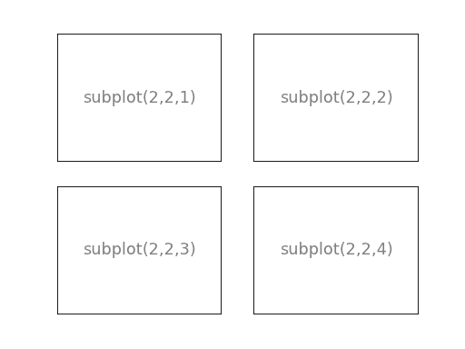
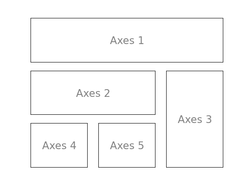
坐标轴 坐标轴和子图功能类似，不过它可以放在图像的任意位置。因此，如果你希望在一副图中绘制一个小图，就可以用这个功能。
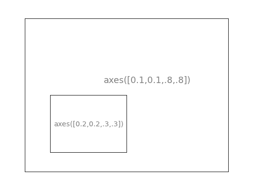
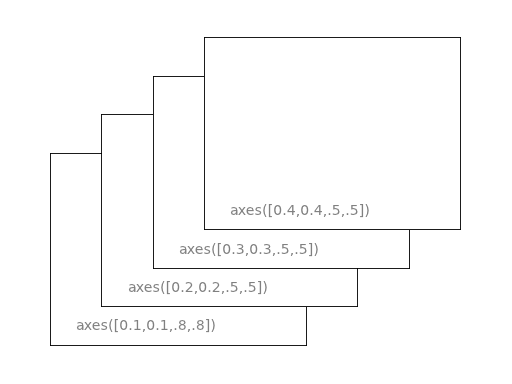
记号 良好的记号是图像的重要组成部分。Matplotlib 里的记号系统里的各个细节都是可以由用户个性化配置的。你可以用 Tick Locators 来指定在那些位置放置记号，用 Tick Formatters 来调整记号的样式。主要和次要的记号可以以不同的方式呈现。默认情况下，每一个次要的记号都是隐藏的，也就是说，默认情况下的次要记号列表是空的——NullLocator。
Tick Locators 下面有为不同需求设计的一些 Locators。
类型
说明
NullLocatorNo ticks.
IndexLocatorPlace a tick on every multiple of some base number of points plotted.
FixedLocatorTick locations are fixed.
LinearLocatorDetermine the tick locations.
MultipleLocatorSet a tick on every integer that is multiple of some base.
AutoLocatorSelect no more than n intervals at nice locations.
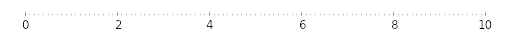
LogLocatorDetermine the tick locations for log axes.
这些 Locators 都是 matplotlib.ticker.Locator 的子类，你可以据此定义自己的 Locator。以日期为 ticks 特别复杂，因此 Matplotlib 提供了 matplotlib.dates 来实现这一功能。
其他类型的图 接下来的内容是练习。请运用你学到的知识，从提供的代码开始，实现配图所示的效果。具体的答案可以点击配图下载。
普通图 1 2 3 4 5 ... for label in ax.get_xticklabels() + ax.get_yticklabels(): label.set_fontsize(16) label.set_bbox(dict(facecolor='white', edgecolor='None', alpha=0.65 )) ...
散点图 1 2 3 4 5 6 7 8 from pylab import * n = 1024 X = np.random.normal(0,1,n) Y = np.random.normal(0,1,n) scatter(X,Y) show()
条形图 1 2 3 4 5 6 7 8 9 10 11 12 13 14 15 from pylab import * n = 12 X = np.arange(n) Y1 = (1-X/float(n)) * np.random.uniform(0.5,1.0,n) Y2 = (1-X/float(n)) * np.random.uniform(0.5,1.0,n) bar(X, +Y1, facecolor='#9999ff', edgecolor='white') bar(X, -Y2, facecolor='#ff9999', edgecolor='white') for x,y in zip(X,Y1): text(x+0.4, y+0.05, '%.2f' % y, ha='center', va= 'bottom') ylim(-1.25,+1.25) show()
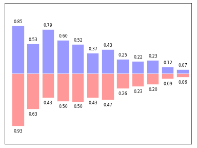
等高线图 1 2 3 4 5 6 7 8 9 10 11 12 from pylab import * def f(x,y): return (1-x/2+x**5+y**3)*np.exp(-x**2-y**2) n = 256 x = np.linspace(-3,3,n) y = np.linspace(-3,3,n) X,Y = np.meshgrid(x,y) contourf(X, Y, f(X,Y), 8, alpha=.75, cmap='jet') C = contour(X, Y, f(X,Y), 8, colors='black', linewidth=.5) show()
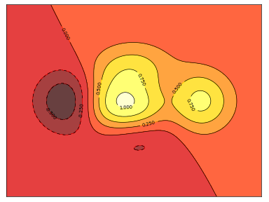
灰度图（Imshow） 1 2 3 4 5 6 7 8 9 from pylab import * def f(x,y): return (1-x/2+x**5+y**3)*np.exp(-x**2-y**2) n = 10 x = np.linspace(-3,3,4*n) y = np.linspace(-3,3,3*n) X,Y = np.meshgrid(x,y) imshow(f(X,Y)), show()
饼状图 1 2 3 4 5 from pylab import * n = 20 Z = np.random.uniform(0,1,n) pie(Z), show()
量场图（Quiver Plots） 1 2 3 4 5 from pylab import * n = 8 X,Y = np.mgrid[0:n,0:n] quiver(X,Y), show()
网格 1 2 3 4 5 6 7 8 9 from pylab import * axes = gca() axes.set_xlim(0,4) axes.set_ylim(0,3) axes.set_xticklabels([]) axes.set_yticklabels([]) show()
多重网格 1 2 3 4 5 6 7 from pylab import * subplot(2,2,1) subplot(2,2,3) subplot(2,2,4) show()
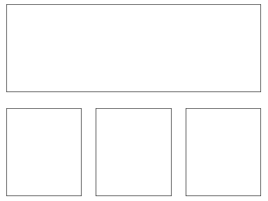
极轴图 1 2 3 4 5 6 7 8 9 10 11 12 13 14 15 from pylab import * axes([0,0,1,1]) N = 20 theta = np.arange(0.0, 2*np.pi, 2*np.pi/N) radii = 10*np.random.rand(N) width = np.pi/4*np.random.rand(N) bars = bar(theta, radii, width=width, bottom=0.0) for r,bar in zip(radii, bars): bar.set_facecolor( cm.jet(r/10.)) bar.set_alpha(0.5) show()
3D 图 1 2 3 4 5 6 7 8 9 10 11 12 13 14 from pylab import * from mpl_toolkits.mplot3d import Axes3D fig = figure() ax = Axes3D(fig) X = np.arange(-4, 4, 0.25) Y = np.arange(-4, 4, 0.25) X, Y = np.meshgrid(X, Y) R = np.sqrt(X**2 + Y**2) Z = np.sin(R) ax.plot_surface(X, Y, Z, rstride=1, cstride=1, cmap='hot') show()
手稿 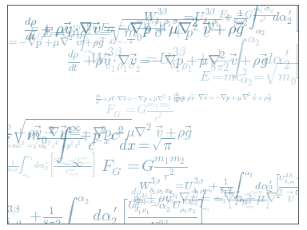
结束篇 Matplotlib 能有今天这样强大的功能和广泛的使用得益于大量的文档和社区开发者。这里提供一些有益的链接。
入门教程
Matplotlib 文档
随代码分发的文档 Matplotlib 的代码是自文档（Self-documented）的。你可以在 Python 中快速查询某个命令的用法。
1 2 3 4 5 6 7 8 9 10 11 12 13 14 15 16 17 18 19 >>> from pylab import * >>> help(plot) Help on function plot in module matplotlib.pyplot: plot(*args, **kwargs) Plot lines and/or markers to the :class:`~matplotlib.axes.Axes`. *args* is a variable length argument, allowing for multiple *x*, *y* pairs with an optional format string. For example, each of the following is legal:: plot(x, y) # plot x and y using default line style and color plot(x, y, 'bo') # plot x and y using blue circle markers plot(y) # plot y using x as index array 0..N-1 plot(y, 'r+') # ditto, but with red plusses If *x* and/or *y* is 2-dimensional, then the corresponding columns will be plotted. ...
画廊 Matplotlib 画廊 也非常有用。其中的例子都有配图和对应的代码，当你不知道某一个效果如何实现的时候，你可以在这里找找。
哦，这里还有一个小一点的画廊 。
邮件列表 你可以在用户邮件列表 提问，或者在开发者邮件列表 里交流技术。
译注：邮件列表是一个很正式的交流平台，其内的每一封邮件，列表的收听者都会看到，所以请不要在邮件列表灌水或发表质量低劣的文章。
快速查询 你可以在这里 找到 Matplotlib 主要的属性表，以便按照需求个性化配置你的输出图样。


{kind=link}